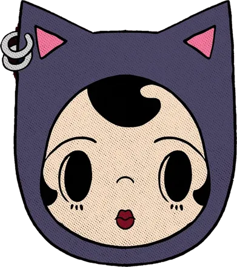

Orlando arts & culture
Search Central Florida
Your guide to local art, music, markets and events, so you can get off your phone and out the door.

Today in Orlando
- Loading today's events...
 SEARCH
Central Florida
SEARCH
Central Florida
Orlando arts & culture
Your guide to local art, music, markets and events, so you can get off your phone and out the door.
